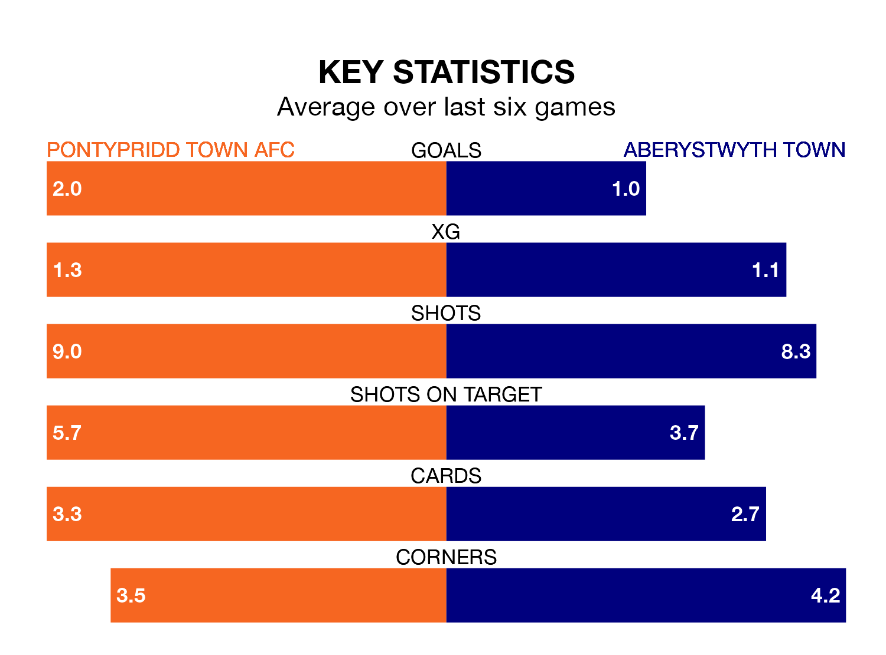

The Welsh Premier League's top two sides face each other at Ynysangharad Park in Saturday's early kick-off, when zero-placed Pontypridd Town AFC host zero-placed Aberystwyth Town.
Pontypridd Town have picked up eight wins and five draws from 26 games so far this season, and sit nine points above the visitors going into the 2.30pm match.
The Seasiders, meanwhile, have won five and drawn five, picking up 20 points.
With 21 goals in 26 games so far this season, Aberystwyth are the league's-5th-lowest scorers with 0.8 goals per game. And they are conceding more than average, letting in 49 goals at a rate of 1.9 per game.
Pontypridd Town are also below average scorers, with 0.8 goals per game, compared to a league average of 1.5. They have conceded 1.2 goals per game.
In the last 10 years, Pontypridd Town and Aberystwyth have played each other on seven occasions. Pontypridd Town won four of them, Aberystwyth one, and they drew twice.
On average, the Dragons scored 1.6 goals and the Seasiders 1.0 in those matches.
Their last meeting was on December 26, when Pontypridd Town won 2-0 at home.
The Dragons are in good form in the Welsh Premier League, with four wins and a draw from their last six games.
With two wins and two draws over that period, Town's form is worse – they have taken eight points from 18, compared to the home team's 13.
Pontypridd Town's last match was on March 2, a 1-0 win against Penybont, with Jan Leo Märtins getting the goal for the Dragons.
Aberystwyth drew 1-1 with Barry Town United last time out, also on March 2, with Ben Woollam on the scoresheet.
Updated: 09:34 (UTC), 08/03/24